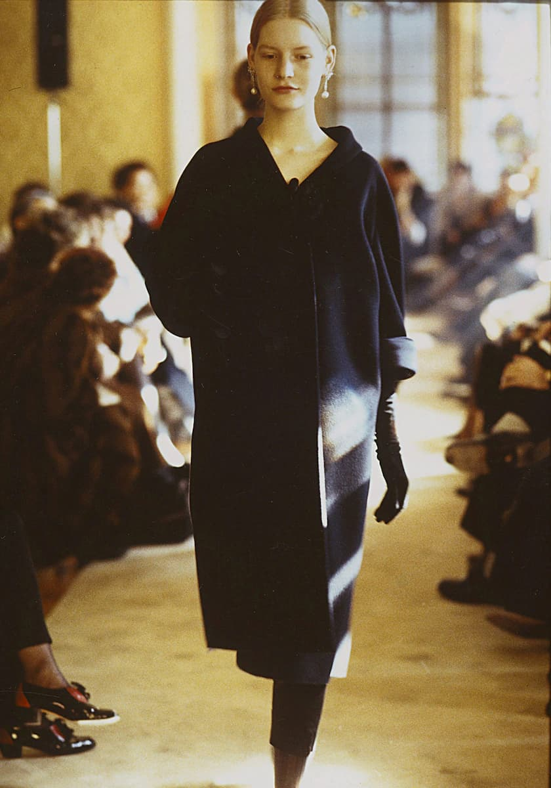
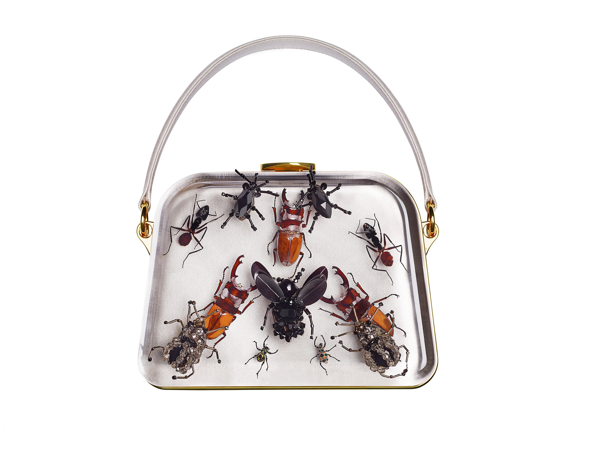

「某些時候，你所做不再是自己的，而是在別人的手上。」 Miuccia Prada 女士在 2021 年春夏秀後接受英國《金融時報》訪問時表示，作為同名品牌 PRADA 主創意總監的最後一場秀，其名為「The Show That Never Happened」，除兼具實用性、優雅與極簡之外，也是時尚界首次邀請其他設計師以「雙創意總監方式」共同設計，大大的致敬了 1988 年 PRADA 的首場女裝秀。
01. 史無前例的「雙創意總監」
於今年 2 月，在米蘭迎來首度封城前的那個禮拜，Prada 女士和 Raf Simons 兩人在義大利貝加莫總部的椅子上宣布了許多人都已知道的事：當了 40 年的 PRADA 設計師後，她將這份重擔與 Dior 和 Calvin Klein 的前創意總監一同分享。時尚界從未有過兩個在業界眾所皆知且備受尊敬的人物共同承擔創意的責任，這除了證明 Prada 女士變革的能力，還有兩人對於產業「業績銷售至上」的抵制。
這是一個開放的時刻，我一直都… 我不想用獨立來形容，但對於聯名我一直都是敬謝不敏，」Prada 女士表示，這是她首度在「時尚方面」與他人合作，「2016 年，我和 Raf Simons 的訪問中（System Magazine#8），我們開玩笑說若彼此喜歡欣賞的設計師一起工作會很棒，或許可以給認真的人一個創作環境，一個大家相互尊重、在乎創意大過於行銷的地方。」
02. Prada 的「反」
身為 PRADA 粉絲的 Anna Wintour 便曾說過：「時尚界首先注意到的是 Miuccia Prada 的無所畏懼，她有質問的勇氣：何謂美？何謂好品味？多年來她持續著迷，因為她不斷在挑戰常規，仍在抵制陳腔濫調。」 這所謂將醜變得時髦，早於其他設計師在高級時裝的領域中將 vintage 設計挪用至現代，Prada 女士往往專注在被忽略的下半身，裙裝尤其是，舉凡中長裙、鉛筆裙或動感百褶裙…等復古輪廓一次又一次的出現，其也是她借鑑過去女性態度的方式。
英國蛇形畫廊（Serpentine Gallery）藝術總監 Hans-Ulrich Obrist 曾在蘇富比上評論道：「藝術史學者 Erwin Panofsky 曾不斷暗示我們可以用過去的服飾去發明未來，我認為這是 Miuccia Prada 工作上非常重要的一個面向。」 在她的字典中，珍稀不等於奢華，在透過穿搭和設計取悅自己的同時，她也在教導別人在做同樣的事。其衣服雖被評論為：醜、不高級，甚至引起許多爭議，但某方面來說，她與川久保玲女士很像，挑戰世俗美和奢侈的概念，可坦白說，玲姐的衣服，多數不太實穿。幽默的是，Prada 女士曾吿訴 PRADA 鐵粉兼時尚評論家 Alexander Fury 說過：「我常感謝老天，幸好川久保玲不想要走商業路線，否則我們都會死掉。」
03. 為何要這樣？
過去 Miuccia Bianchi Prada 女士從沒打算從事時尚界，她身兼政治學博士、女權運動家以及曾是共產黨員，最後這個身份讓她備受爭議，畢竟某方面來說，一個「拒絕奢侈理念的」精品設計師總帶來衝突矛盾感，但她不在意的說：「共產黨員在當時非常普遍，幾乎每個看似聰明的孩子都是左派份子，所以我其實不是這麼特別。」
「讓我們這麼說吧，作為一個左派女權藝術家，在時尚界工作，完全是場惡夢。」— Miuccia Prada
從意識形態上來講，她是從窮人身上「取經」替富人治裝。「我想變得更聰明，」她曾強調道，「亦或更複雜、或更困難、或更有趣、更新穎。」她反抗，在 90 年代末大家都在擁抱的性感緊身時，Miuccia Prada 反其道而行，其也成就了經典名言：
「醜是迷人的、是令人興奮的，或許是因為那是新的。」
她的興趣在學生時代就轉向了女權主義 — 探索另種美的價值並拒絕框架。「我做的任何事都是讓醜變得更吸引人，」Prada 女士曾對大都會藝術博物館時裝學院院長 Andrew Bolton 說過，而 Andrew Bolton 則補充表示，「此舉破壞了傳統美的觀念，破壞了華貴的資本主義女性們。」在 1996 年秋冬系列，她以英國品牌 Anaglypta 的壁紙和富美家 Formica 桌巾擷取靈感，舉世聞名的系列「ugly chic」誕生。
04.「ugly chic」
1996 年五月，時尚界著名的評論家都加入了這場 PRADA 的盛宴，《華盛頓郵報》時尚記者 Robin D. Givhan 以標題「Ugly is in」示警，舉凡 PRADA 系列中的「僵硬和不討喜」、「如史萊姆和發黴般的綠」、「如泥濘髒水般的棕」，這些「醜」將席捲時尚圈。
當時被時尚評論家所冠上的「糞褐色」，即便時尚產業十年前就已出現在西裝上，但從未與綠松石、淡紫色和似酪梨和藥草酒的綠同時出現，更別說是以圖書館員裙的形式穿戴在模特耳身上，衣服上的大號鈕以及扣綴以花飾的厚底 T 型涼鞋，諸多的「不對勁」和「困惑」，PRADA 和 Miu Miu 的設計總監 Fabio Zambernardi 曾在接受時尚雜誌《AnOther》總編 Susannah Frankel 訪問時解釋：「起初有 Versace、有 Armani，大家做的都比 Prada 來得有聲量。….沒什麼人關注 PRADA，但當秀帶著驚人的概念出現時，人們開始注意到了我們，震驚於材料的錯誤使用、震驚於尼龍材質不再只用在包包上，震驚於品牌美醜的探索。」Fabio Zambernardi 表示，「（90 年代的性感）那時大家最在意的是要美美的：你腳必須要優雅，你得看起來性感。….但這些 Prada 都不感興趣，我也完全不在意，我完全不想拿那樣的設計給她。」
「對我來說，僅把超精美的東西給被邀請來的鑑賞者看是非常無聊的，當然，你多少會希望能被少數精明的人理解，但有時你必須透過某種方式讓自己變得更大聲，否則你的訊息無法傳遞出去。我個人對與人交流、與世界交流蠻有興趣的，這比單純把東西做的美美的有挑戰性多了。」— Miuccia Prada
05.「醜」的力量
「某些事物初期前幾個月會看起來醜，突然之間會變正常，或許幾個月後就會交換，然後再度覺得那醜。」紐約流行設計學院博物館館長 Valerie Steele 曾解釋，醜既是創新、令人興奮，卻也是週期性的。 Alexander Fury 曾在〈MIUCCIA PRADA – THE MASTER OF ‘UGLY’〉一文中表示：「Miuccia Prada 的招牌是趨向心理的，她的衣服最終是有關美感、意識形態上的不適，有時僅是曇花一現。會短暫是因為 Prada 女士在這季所煽動的醜，一段時間後就會變成新的美。她不斷變化的美學和挑起情感的領域影響著眾多設計師和時尚業者，有時甚至會影響整個流行文化。」
回到 1988 年二月，Prada 女士的首場女裝系列（1988 F/W），她毫無不客氣地將這低調無華的服裝（簡單的線條加上樸實的色調）稱作「被略微剝奪權利的制服」。她曾告訴時尚評論家 Alexander Fury 表示：「我還記得《WWD》的描述是『摩登原始人遇到了傑森一家』，我很愛他們這麼說，很符合我想要的。……當初那被視作怪物一般，但如果你回去看，它彷彿毫無過時，應有盡有。」

為何 PRADA 能以此長壽？2014 年，前英國 SHOWstudio 時尚網站編輯 Lou Stoppard 認為：「醜比任何事物都能賦予穿戴者力量，因為你必須要有足夠龐大的自信，要能早於他人穿上他們討厭、有可能還是別人不會穿的東西。」 相同的平台，時隔六年後的 2020 再度探討了 PRADA 的醜，其網站編輯 Hetty Mahlich 便評論道：「Miuccia Prada 迫使我們重新思考品味的界線，穿著 Prada 意味著女人有選擇美感的自由……。當時尚大部分都在質疑自己如何在環保意識崛起的時代去創造新事物時，Prada 女士的使命則是去質問傳統智慧、會去斷定好壞醜美，以及接受或難以忍受的態度，這比以往任何時候都更有意義。」
06. 為什麼不能只做自己想做的？
90 年代至 2000 年初期，這是 PRADA 的輝煌時代，除了推出男裝系列和另個女裝品牌 Miu Miu 外，它也開始收購 Helmut Lang、Church’s、Car Shoe 以及 Jil Sander（Raf Simons 也是在此時受聘），外加眼鏡和香氛系列，根據富比世的報導指出，營業額從 70 年代的 40 萬美元，到了 2011 年達到 26 億歐元。
然而，2014 年，品牌出現了自上市以來的首次裂痕，分析師表示，公司拓展了太多商店，錯過了向數字化轉變以及培育設計師的熱潮，致使當公司在 2013 年九月到到 2016 年一月前尋求轉變時，品牌股價已下跌了四分之三，直到 2018 年，銷售額才恢復了正增長，即便新冠肺炎造成損失，但股價仍比 2020 年初上漲了四分之一。
對此，Prada 女士告訴英國《金融時報》說：「我和我的丈夫從來沒有早上醒來在想要賺更多的錢，」她說，「這可能不會受金融界所讚賞，但這是事實，我們所做的是因為我們真的喜歡，我們認為它真的很有趣、真的有效的。」 「某些時候，奢侈品牌會變得只在乎銷售，」她說，「某些時候，很多記者會變得不在乎內容或自己寫了什麼或會影響到誰，評論的價值最後只變成能賺多少錢而已。….甚至當你想要保持小規模，也因為你可能會消失而不行，這才是業界需要被打破價值觀呀。」 如今 Prada 女士現年 72 歲，比義大利官方退休年齡還高出了五年，儘管許多人認為與 Raf Simons 合作只是最終接任的第一步，但她並沒有計畫在近期結束這一切，「我喜歡工作，我會在這，比以往更加的努力。」

大家很少看見 Miuccia Prada 在服裝上與設計師合作，少數案例大概是在 2013 年與藝術家 Damien Hirst，她曾在接受（PRADA 鐵粉）Alexander Fury 訪問表示，「那是因為 Damien Hirst 是我的朋友，所以我說：『聽著，我不想只做一個包，所以我做了一個讓人反感的包，反感到根本不會有女生想帶著它。』」這邪惡的念頭造就了一系列上頭以（壓克力製作的）昆蟲裝飾包款，她的認真，蠻嚇人的。 這不斷求新的執著是 Prada 女士的源泉，卻也解釋了大家的震懾和不解，Alexander Fury 表示，「我曾和別人爭辯過 PRADA，很多人都告訴我這很醜，問我誰會穿，問我這到底是什麼，這真的驚擾到很多人。但我覺得 Prada 女士反而對這一切感到滿意，她告訴我她更不想要取悅任何人，包括她自己的公司。」